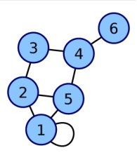

Teoría de conjuntos. Rama de las matemáticas cuyo objeto son los conjuntos. El primer estudio formal sobre el tema fue realizado por el matemático alemán Georg Cantor en el siglo XIX y más tarde reformulada por Zermelo.
El concepto de conjunto es intuitivo y se podría definir como una "agrupación bien definida de objetos no repetidos ni ordenados"; un conjunto está bien definido, cuando puede afirmar si un determinado elemento pertenece o no al conjunto.
En el siglo XIX, según Frege, los elementos de un conjunto se definían sólo por tal o cual propiedad. Actualmente la teoría de conjuntos está bien definida por el sistema ZFC. Sin embargo, sigue siendo célebre la definición que publicó Cantor:
Se entiende por conjunto a la agrupación en un todo de objetos bien diferenciados de nuestra intuición o nuestro pensamiento.El concepto de conjunto y conjunto de conjuntos juega un rol importante en la fundamentación de la topología general y de la teoría de probabilidades, entre otras ramas.
Tipos de conjuntos
Conjunto vació o conjunto nulo: Es aquel que no tiene elementos y se simboliza por ∅ o { }.
A = {x2 + 1 = 0 | x ∈ R}
El conjunto A, es un conjunto vacío porque no hay ningún número real que satisfaga a x2+1 = 0
Conjunto universal o conjunto referencial: Es el conjunto de todos los elementos considerados en una población o universo, en un problema en especial. No es único, depende de la situación, denotado por U o Ω.
La familia de todos los subconjuntos de un conjunto cualquiera A se llama conjunto potencia, denotado por P(A) o 2A. Este, si no es el conjunto vacío contiene, necesariamente ∅ y el mismo conjunto, llamados subconjunto impropios. Si B es subconjunto de A es lo mismo que B sea un elemento del conjunto potencia de A.
Si un conjunto es finito con n elementos, entonces el conjunto potencia tendrá 2n subconjuntos o partes.
A = {1, 2 }
El total de subconjuntos es: 22 = 4
{1,2}, {1}, {2}, { }
Conjuntos disjuntos Son aquellos que no tienen elementos en común, es decir, cuando no existen elementos que pertenezcan a ambos. F = {1, 2, 3, 4, 5, 6}
G = {a, b, c, d, e, f}
Partición. Cuando un conjunto es dividido en subconjuntos mutuamente excluyentes y exhaustivos, se le denomina partición.
Una tabla de verdad, o tabla de valores de verdades, es una tabla que muestra el valor de verdad de una proposición compuesta, para cada combinación de verdad que se pueda asignar
Tabla de verdad completa
Las tablas de verdad son un método para saber si una fórmula molecular (es decir,
formada por varias proposiciones) es siempre V, a veces V o nunca V (es decir, siempre
F).
Si los valores son siempre V tenemos una Tautología, si siempre son F estamos ante
una contradicción.
En matemáticas y en ciencias de la computación, la
teoría de grafos (también llamada teoría de las
gráficas) estudia las propiedades de los grafos
(también llamadas gráficas). Un grafo es un
conjunto, no vacío, de objetos llamados vértices (o
nodos) y una selección de pares de vértices,
llamados aristas (edges en inglés) que pueden ser
orientados o no. Típicamente, un grafo se representa
mediante una serie de puntos (los vértices)
conectados por líneas (las aristas).
Lista de incidencia
Las aristas son representadas con un vector de
pares (ordenados, si el grafo es dirigido), donde cada par representa
una de las aristas.
Lista de adyacencia
Cada vértice tiene una lista de vértices los
cuales son adyacentes a él. Esto causa redundancia en un grafo no
dirigido (ya que A existe en la lista de adyacencia de B y viceversa),
pero las búsquedas son más rápidas, al costo de almacenamiento
extra.

En esta estructura de datos la idea es asociar a cada vértice i del grafo
una lista que contenga todos aquellos vértices j que sean adyacentes a
él. De esta forma sólo reservará memoria para los arcos adyacentes a i
y no para todos los posibles arcos que pudieran tener como origen i. El
grafo, por tanto, se representa por medio de un vector de n
componentes (si |V|=n) donde cada componente va a ser una lista de
adyacencia correspondiente a cada uno de los vértices del grafo. Cada elemento de la lista consta de un campo
indicando el vértice adyacente. En caso de que el grafo sea etiquetado, habrá que añadir un segundo campo para
mostrar el valor de la etiqueta.
Estructuras matriciales
Matriz de incidencia
M El grafo está representado por una matriz de A (aristas) por V (vértices), donde [arista,
vértice] contiene la información de la arista (1 - conectado, 0 - no conectado)
Matriz de adyacencia
El grafo está representado por una matriz cuadrada M de tamaño , donde es el
número de vértices. Si hay una arista entre un vértice x y un vértice y, entonces el elemento es 1, de lo
contrario, es 0